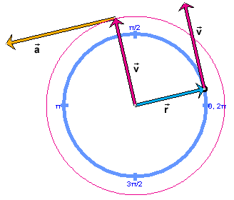

and velocity vector
and velocity vector  , the latter with its tail end attached to the tip of
. with its tail fixed at the center of the circle and
the acceleration vector
, the latter with its tail end attached to the tip of
. with its tail fixed at the center of the circle and
the acceleration vector  , with its tail end attached to the tip of .
, with its tail end attached to the tip of .Preparation:
In this session, the following two expressions will be derived for the magnitude a of the acceleration of a particle moving with constant speed v, and constant angular speed w, in a circle of radius r:
a = r w2 = v2 / r

The derivation will be based on an analogy between acceleration and velocity that is illustrated in the image above. The image shows two pairs of vectors. All of the vectors are properties of the particle. The velocity vector is shown twice, in different locations.
and velocity vector , the latter with its tail end attached to the tip of
. with its tail fixed at the center of the circle and
the acceleration vector , with its tail end attached to the tip of .The derivation will be based on the fact that Pair 2 is analogous to Pair 1. This analogy is a consequence of the analogy between the definitions of acceleration and velocity. For a review of the definitions go to the links "Velocity" and "Acceleration" under Related Items. The definitions imply that acceleration is related to velocity the way velocity is related to position. The image shows that the acceleration vector is related to the velocity vector in Pair 2 as the velocity vector in Pair 1 is related to the position vector.
On Page 2, an applet will let you observe the analogy betwee Pairs 1 and 2 in motion. Information on how to use the applet, in particular, on displaying the vectors shown in the image above, is available under Applet Help on the applet's Help menu. Set the speed of the particle to v = 0.25 m/s if you want to reproduce the image above.